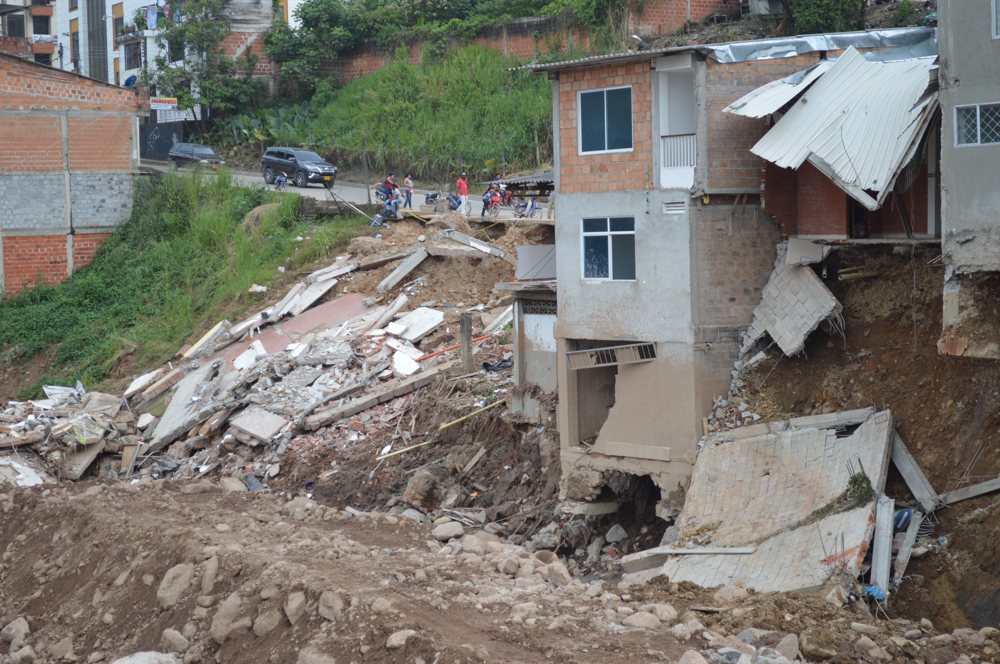
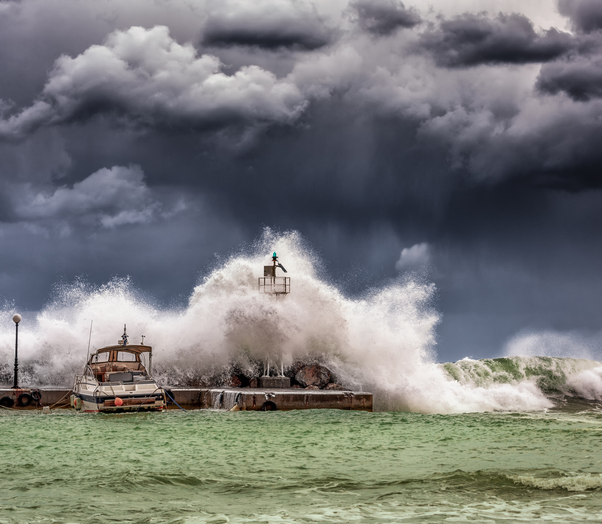
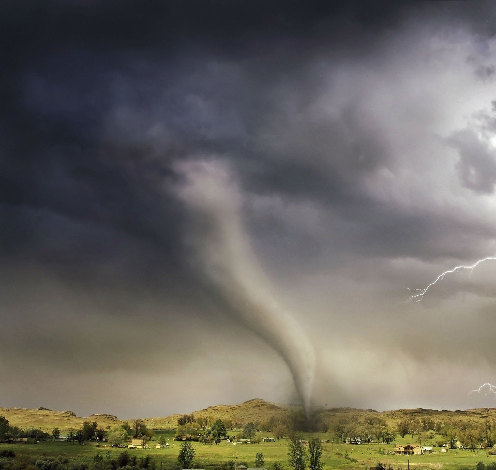
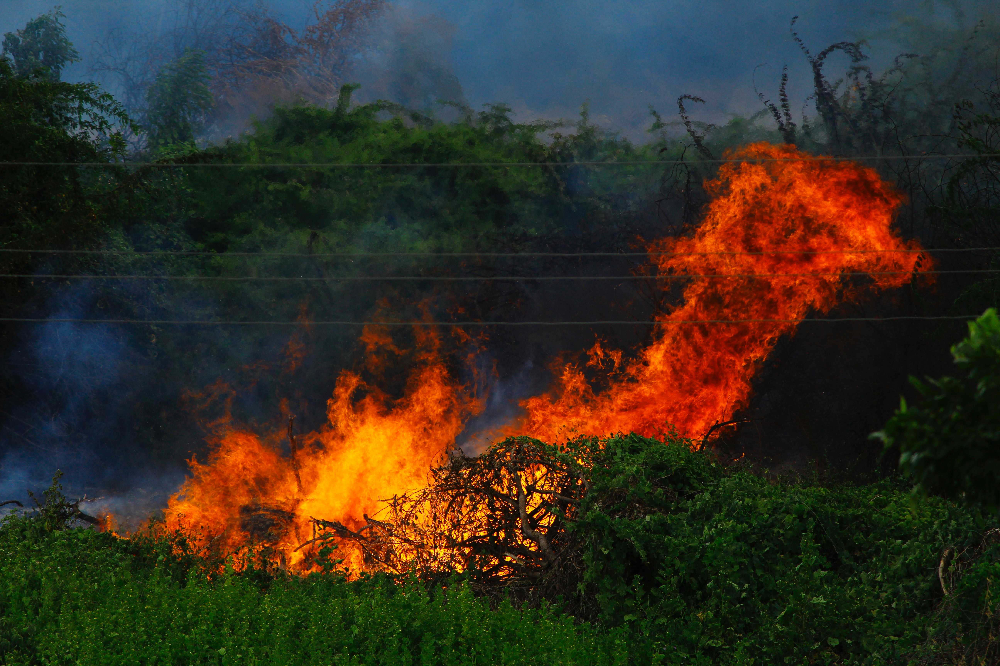
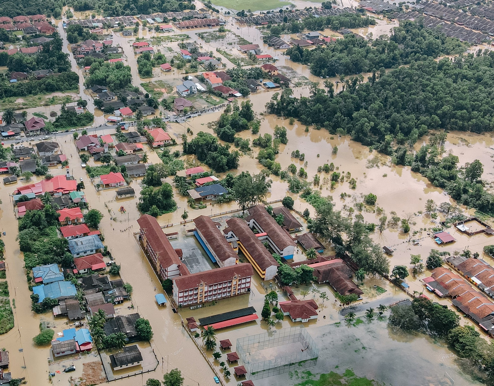
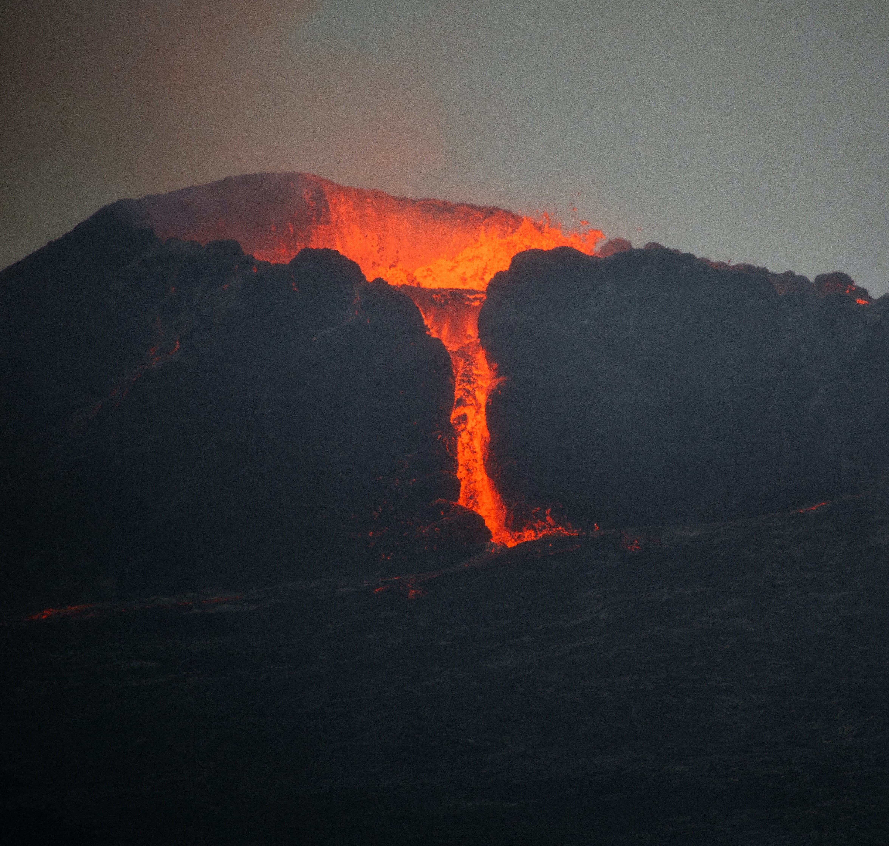

Preventive Measures for Different Emergencies
Natural Disasters

Earthquake
What Should You Do Before Earthquake?
- Secure heavy furniture and appliances to walls to prevent tipping
- Create an emergency plan and designate meeting points
- Know how to shut off gas, water, and electricity
What Should You Do During Earthquake?
- "Drop, Cover, and Hold On" during the shaking
- Stay away from windows, glass, and exterior walls
- If indoors, stay indoors; if outdoors, find an open area away from buildings, trees, and power lines
How Can You Stay Safe After Earthquake?
- Check for injuries and administer first aid
- Beware of aftershocks and potential building damage
- Listen to emergency broadcasts for updates and evacuation orders

Hurricane
What Should You Do Before Hurricane?
- Secure windows and doors with storm shutters or plywood
- Trim trees and shrubs to reduce flying debris
- Stock up on essentials, including water, non-perishable food, and medications
What Should You Do During Hurricane?
- Stay inside and away from windows
- If advised, evacuate to higher ground or a designated shelter
- Follow local authorities' instructions and listen to weather updates
How Can You Stay Safe After Hurricane?
- Wait for the all-clear from authorities before venturing outside
- Avoid flooded areas and downed power lines
- Check on neighbors and assist those in need if it is safe to do so

Tornado
What Should You Do Before Tornado?
- Identify a safe room or storm shelter in your home
- Have a battery-operated weather radio for alerts
- Clear yard of loose objects that can become projectiles
What Should You Do During Tornado?
- Seek shelter immediately in a basement or interior room without windows
- Cover yourself with a mattress or heavy blankets to protect against flying debris
- Do not try to outrun a tornado in a vehicle
How Can You Stay Safe After Tornado?
- Watch out for hazards like broken glass and downed power lines
- Use caution when entering damaged buildings
- Report gas leaks or damaged utility lines to authorities

Wildfires
What Should You Do Before Wildfires?
- Create a defensible space around your home by clearing flammable vegetation
- Have an evacuation plan and emergency kit ready
- Keep gutters, roofs, and decks clear of leaves and debris
What Should You Do During Wildfires?
- Evacuate early if advised by authorities
- Close all windows and doors to prevent embers from entering the house
- Stay tuned to local news and weather updates
How Can You Stay Safe After Wildfires?
- Wait for authorities to declare it safe before returning home
- Check for hidden embers or hotspots around your property
- Be cautious of ash, smoke, and damaged structures

Flood
What Should You Do Before Flood?
- Know your area's flood risk and elevation
- Elevate electrical systems and appliances above potential flood levels
- Purchase flood insurance if you live in a high-risk area
What Should You Do During Flood?
- Evacuate if necessary and move to higher ground
- Avoid walking or driving through floodwaters
- Disconnect electrical appliances and turn off utilities if flooding is imminent
How Can You Stay Safe After Flood?
- Avoid returning home until authorities declare it safe
- Check for structural damage and potential hazards
- Take photos of damages for insurance claims

Tsunami
What Should You Do Before Tsunami?
- Familiarize yourself with tsunami evacuation routes
- Have a designated meeting place for family members
- Know the natural signs of an impending tsunami, such as the water receding rapidly
What Should You Do During Tsunami?
- Move to higher ground immediately if you feel an earthquake or receive a tsunami warning
- Stay tuned to emergency broadcasts for updates
How Can You Stay Safe After Tsunami?
- Stay away from coastal areas until authorities declare them safe
- Be cautious of potential aftershocks

Volcanic Eruption
What Should You Do Before Volcanic Eruption?
- Be aware of the nearest evacuation routes and shelters
- Have a mask to protect against ash inhalation
- Keep a battery-operated radio for updates
What Should You Do During Volcanic Eruption?
- Follow evacuation orders promptly
- Stay indoors and keep windows and doors closed to prevent ash from entering
- If caught outside, wear protective clothing and goggles
How Can You Stay Safe After Volcanic Eruption?
- Check for injuries and administer first aid
- Clean off ash carefully, as it can be abrasive and harmful if inhaled
- Protect water sources from ash contamination
Heatwaves
What Should You Do Before Heatwaves?
- Stay informed about heatwave warnings and forecasts
- Stock up on water and electrolyte-rich beverages
- Use fans or air conditioning to cool indoor spaces
What Should You Do During Heatwaves?
- Stay indoors during peak heat hours (usually midday)
- Avoid strenuous outdoor activities
- Stay hydrated and wear lightweight, light-colored clothing
How Can You Stay Safe After Heatwaves?
- Continue to stay hydrated and avoid exertion
- Check on vulnerable individuals, such as the elderly and young children
- Watch for signs of heat-related illnesses

Drought
What Should You Do Before Drought?
- Conserve water by fixing leaks and using water-saving appliances
- Plant drought-resistant vegetation
- Have a plan for watering essential plants
What Should You Do During Drought?
- Follow local water restrictions and conservation guidelines
- Limit outdoor water usage
- Be mindful of fire risks due to dry conditions
How Can You Stay Safe After Drought?
- Continue water conservation efforts even after the drought ends
- Replenish soil moisture through appropriate irrigation methods
- Stay informed about the recovery of water sources